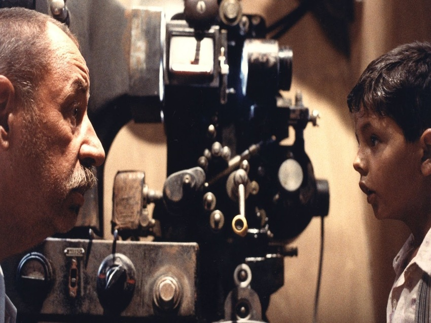
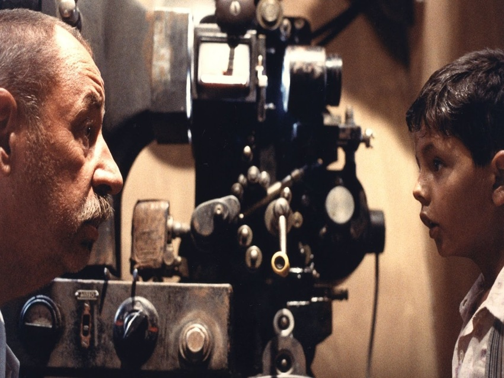

Arte Italiano
La Creación de Adan
Es un fresco en la bóveda de la Capilla Sixtina, pintado por Miguel Ángel alrededor del año 1511. Ilustra uno de los nueve episodios del Génesis , en el cual Dios le da vida a Adán, el primer hombre. Es el cuarto de los paneles que representan episodios del Génesis en el techo de la capilla, fue de los últimos en ser completados. Es de las obras de arte más apreciadas y reconocidas en el mundo.
Miguel Ángel arquitecto, pintor y ante todo, escultor, el es el máximo exponente del Renacimiento Italiano , que es un periodo en el que hay un cambio de mentalidad. Este cambio está sustentado por el Humanismo , que fue un movimiento filosófico, intelectual y cultural que comenzó en Italia en el siglo XIV con el Renacimiento y se extendió a través de Europa, rompiendo con la fuerte influencia que ejerció la Iglesia católica en todos los órdenes de la vida durante la Edad Media.
Las cúpulas de Emilia: itinerario entre iglesias, basílicas y catedrales
Durante siglos, una geometría perfecta y complejos cálculos han permitido que las cúpulas se eleven al cielo: en Emilia, concretamente en Piacenza, Parma y Reggio Emilia, las iglesias, basílicas y catedrales despuntan por doquier. Estas albergan obras maestras únicas y frescos de importantes artistas como Correggio y Guercino.
Caminando entre cúpulas, con la mirada hacia arriba.
La cúpula tiene varios significados, especialmente a nivel espiritual y simbólico. Representa la bóveda celeste y el contacto entre la realidad terrenal y la dimensión divina. A menudo, se adornan con llamativas decoraciones pictóricas. Un itinerario temático se despliega entre Piacenza, Parma y Reggio Emilia, pasando por centros de arte y cultura donde reina la belleza.
Cine Italiano
Cinema Paradiso
En esta obra clásica de la cinematografía italiana, el cine es entendido como algo más que planos, interpretaciones y efectos especiales. Cinema Paradiso mira con ternura a esas salas de proyección núcleo de la vida social de los pueblos. A ese mundo sencillo y espontáneo que florecía en torno a la pantalla. Explica la historia de Totó, un niño inquieto y divertido que pasa la mayor parte de su tiempo en el Paradiso, el cine del pueblecito italiano dónde vive.
El personaje, genialmente interpretado por el jovencísimo Salvatore Cascio, está hipnotizado por la magia del cine. Este embelesamiento por la gran pantalla será clave en su infancia y, más tarde, en su vida adulta. La historia empieza, de hecho, con un maduro Totó, convertido en director de cine que vuelve a su pueblo tras treinta años de ostracismo voluntario. Esta vez, se sentirá obligado a volver, y de camino al pueblo, Totó rememorará su infancia y juventud. Una etapa de su vida marcada por Alfredo, el proyeccionista que le enseñó los misterios del séptimo arte, y un gran amor.
Las cúpulas de Emilia: itinerario entre iglesias, basílicas y catedrales
La Dolce Vita es una de las grandes obras maestras de Federico Fellini, considerada unánimemente como una de las mejores películas de la historia del cine en su versión restaurada por The Film Foundation de Martin Scorsese.
Marcello Rubini es un periodista en busca de celebridades, que se mueve con insatisfacción en las fiestas nocturnas que celebra la burguesía de la época. Cuando se entera de que Sylvia, una célebre diva del mundo del cine, llega a Roma, cree que ésta es una gran oportunidad para conseguir una gran noticia. Así comienza una inolvidable persecución por las fiestas nocturnas de la ciudad.
Ennio Morricone
Cinema Paradiso
Sus composiciones se incluyen en más de veinte películas galardonadas, además de realizar también piezas sinfónicas y corales. Destacan, entre otros, sus trabajos en películas del spaghetti western, de la mano de su amigo Sergio Leone, como Por un puñado de dólares de 1964, Per qualche dollaro in più de 1965, El bueno, el feo y el malo de 1966 o C'era una volta il West de 1968.
Obras
- The Ecstasy of Gold - Famosa por su uso en la película "The Good, the Bad and the Ugly" (El bueno, el feo y el malo).
- Gabriel's Oboe - Conocida por su uso en la película "The Mission" (La misión).
- Chi Mai - Utilizada en la serie de televisión "The Life and Times of David Lloyd George" y en la película "Maddalena".
- Once Upon a Time in the West - Tema principal de la película "Once Upon a Time in the West" (Hasta que llegó su hora).
- Cinema Paradiso - Tema principal de la película "Cinema Paradiso".
- The Good, the Bad and the Ugly - Tema principal de la película "The Good, the Bad and the Ugly" (El bueno, el feo y el malo).
- Love Theme for Nata - De la película "Cinema Paradiso".
- A Fistful of Dollars - Tema principal de la película "A Fistful of Dollars" (Por un puñado de dólares).
- The Battle of Algiers - De la película "The Battle of Algiers" (La batalla de Argel).
- The Mission - Tema principal de la película "The Mission" (La misión).
Arte Musical
The Good, the bad and the ugly, Orchestra
Disfruta...
Ennio Morricone Concierto
Disfruta...
La Dolce Vita
Disfruta...